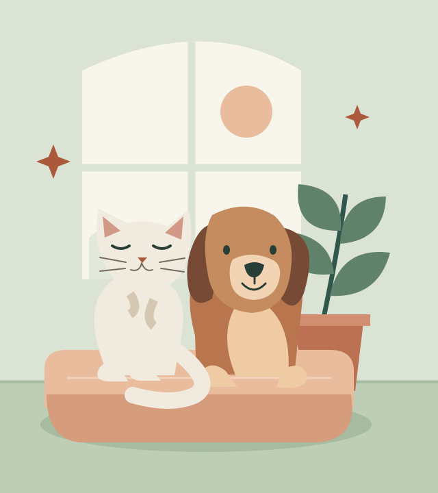

Overnight sitting
Pet and house sitting in your home, with feeding, companionship, habitat care, and medication support.
Home comforts, kept closeAT HOME, IN THE TRIANGLE
A familiar home. A little extra company. Thoughtful care for your pets and your place while you’re away.
Contact LilyCats, dogs, and the little things that make a home.

THE CARE
From an afternoon walk to an overnight stay, care follows the routines you and your pets already know.
Pet and house sitting in your home, with feeding, companionship, habitat care, and medication support.
Home comforts, kept closeA chance to stretch their legs, explore familiar paths, and keep their daily walking routine going.
A good day starts with a walkDaytime care for feeding, company, habitat upkeep, and medications, planned around your pet’s needs.
A familiar rhythm, even awayPlants watered. Mail and packages brought in. Trash and recycling taken care of. The everyday details, included in your agreed care plan.
MEET YOUR SITTER
I’m a lover of critters of all sizes and very passionate about caring for animals. It means a lot to me that people trust me with their fur children, and I strive to make time away from home worry-free.
I well and truly love animals, and getting to care for them makes me incredibly happy.
I’ve spent five years caring for cats and dogs, and cats have been part of my life for as long as I can remember.
I’m patient with more reclusive critters, and I know that every pet has their own habits, personality, and needs. We’ll talk through those details at a free meet-and-greet in your home, so we can build a care plan that feels familiar.
Experience with oral, injected, topical, and eye-drop medications. We’ll review your pet’s instructions together before a booking.
PLAN YOUR STAY
Care is personal. We’ll confirm your dates, your pets’ needs, and your quote together.
$75/ day
The questionnaire’s draft pet and house sitting rate is $75/day, including all meals, walks, and trash/recycling. Final care and pricing will be confirmed by quote.
Extra charges for holidays, limited notice, or pets who are difficult to medicate are under consideration; amounts are not set.
Tell Lily about your pets, general area, and the care you need.
A free meet-and-greet gives us time to review routines and home details.
Confirm dates, instructions, household tasks, and pricing together.
ANSWERS BEFORE YOU GO
Choose a topic to read the details. We’ll talk through anything specific to your pets before confirming a booking.
I’m most comfortable with cats and dogs, but I’m willing to learn another animal’s needs and routine. We’ll discuss unfamiliar animals before accepting care. Spiders may be an exception; that boundary is still being decided.
Standard care includes all meals, habitat care, playtime or walks, and the household tasks we agree on.
I have experience with oral, injected, topical, and eye-drop medications. We’ll review your pet’s instructions before a booking.
Please provide medication instructions before care begins. The questionnaire does not define additional medical-care limits; special care arrangements need discussion before a booking.
Photo updates are available whenever desired. We’ll discuss how you’d like to receive updates before your stay.
A free meet-and-greet, preferably in your home, lets us get acquainted. Before confirming a booking, we’ll discuss your inquiry, feeding, medications, play, walks, and household tasks, including mail, trash and recycling dates, and plant-watering schedules.
Please provide an emergency contact, your veterinarian’s phone number and address, and medication instructions before care begins.
Your designated contact will be alerted about injuries, illness, or severe weather. Tell me if your pet tends to escape so we can discuss an escape plan at the meet-and-greet.
The questionnaire does not identify a backup sitter. Any special care arrangements need discussion before a booking.
Arrange keys or access information privately at the meet-and-greet. Keep door codes, alarm details, and other access information out of the inquiry form.
Please give me a heads-up about indoor cameras and any visitors, contractors, or other people expected while I’m at your home.
The questionnaire’s policy calls for a one-day rate fee for cancellations within 48 hours of the scheduled start. If I become unavailable or must stop while your pet is in my care, there will be no charge for services already rendered.
EXPERIENCE & REFERENCES
These are the potential references listed in the questionnaire. Permission is marked pending for each; no testimonials or endorsements have been provided.
Client / family friend
Dog and house sitting, plant watering, mail, trash and recycling, and medication administration.
Client / family friend
Dog and house sitting, mail, trash and recycling, and medication administration.
Client
Cat and house sitting, mail, trash and recycling.
No reference contact details, testimonials, or gallery photos were supplied.
PLAN A STAY
We’ll start with your dates, your pets, and the care you have in mind. The draft response window in the questionnaire is 24–48 hours.
The inquiry form is connected, but Lily’s inbox still needs its one-time confirmation before messages can be delivered. Email Lily directly for now.
THE FULL PICTURE
This review version includes the completed questionnaire content, with tentative ideas and unresolved choices kept visible.
Business names under consideration: Triangle Pet Sitting and Lily’s Pet Sitting Service. The questionnaire’s service promise is reliable, all-encompassing pet care in the Triangle.
Ideal clients: Triangle-area families seeking pet care during vacations or other extended time away. The website’s goals are to explain services, show availability, and share references.
Messaging: A reliable-pet-care headline was suggested but not finalized. “Check availability” was the requested main button. Common questions include meet-and-greets and pet updates.
Domain idea: Lilyspetsitting.com was proposed; ownership and availability are not established here. Lily is listed as responsible for approving website changes and keeping information current.
No payment method, training credential, certification, background check, insurance, bonding, adult-oversight arrangement, or legal/business setup was specified. No such claims are made here.
Checkbox choices for branding, page selection, future features, contact channels, launch features, and final approvals were left unmarked. Colors, logos, fonts, example sites, social accounts, gallery plans, and a business phone were not supplied.
The original planning questions mention GitHub and Railway, but account ownership and launch checklists were not completed. This review site uses the hosting requested in this conversation.
The questionnaire identifies home address, client information, and exact age as information to keep private. No home address or exact age appears in the file. The reference names supplied are shown in this review version with their original pending status.
Source: Pet and House Sitting Website Questionnaire, dated July 28, 2026. Includes every question, answer, draft, and blank field for review.